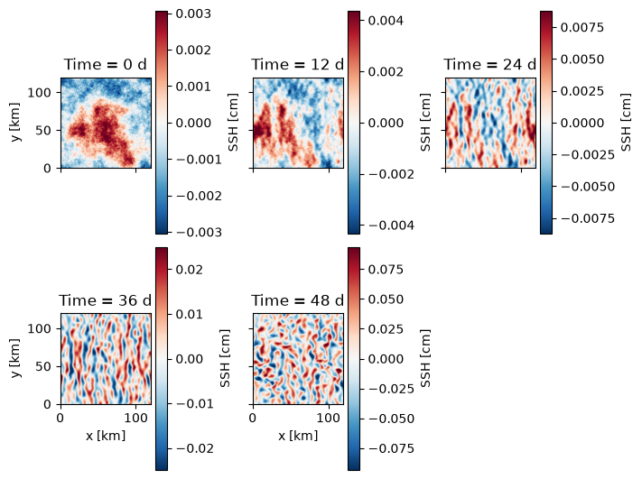

Two-Eady Mixed-Layer Instability
This example runs the CalliesTwoEady
model, a three-PV-sheet representation of mixed-layer instability (MLI)
from “The role of mixed-layer instabilities in submesoscale
turbulence” by Callies, Flierl,
Ferrari, and Fox-Kemper (2016).
A weakly stratified surface mixed layer sitting on a strongly stratified thermocline is baroclinically unstable. Because both layers have zero interior potential vorticity, the full dynamics is carried by three “PV sheets” — at the surface, the mixed-layer/thermocline interface, and the base of the thermocline. The instability injects energy at the small mixed-layer deformation radius (a few km), so it is a clean testbed for submesoscale variability and for the sea-surface height (SSH) signal observed by SWOT.
This model carries out part of its computation in 64-bit precision
regardless of the selected Precision (the
hyperviscous filter underflows in 32-bit arithmetic), so we enable
JAX’s 64-bit support before constructing it.
import operator
import functools
import math
import matplotlib.pyplot as plt
import jax
jax.config.update("jax_enable_x64", True)
import jax.numpy as jnp
import pyqg_jax
Construct the Model
We keep the stratification from Callies et al. (2016) — a 100 m mixed layer (\(N_m = 2\times10^{-3}\ \mathrm{s}^{-1}\)) over a 400 m thermocline (\(N_t = 8\times10^{-3}\ \mathrm{s}^{-1}\)) — but shrink the domain to 120 km. The most unstable MLI wavelength is set by the physics (roughly \(2\pi N_m H_m / f \approx 10\) km) and does not depend on the domain size, so a small box resolves it comfortably at modest grid sizes: here \(\Delta x \approx 0.9\) km, about ten grid points per MLI wavelength. The default hyperviscosity rescales with the grid spacing, so no manual tuning is needed.
The dissipation filter is built from dt at construction time, so the
model takes a dt argument that must match the stepper’s dt.
DT = 300.0
T_MAX = 60 * 86400.0 # 60 days
SNAP_INTERVAL = 12 * 86400.0 # snapshot every 12 days
stepped_model = pyqg_jax.steppers.SteppedModel(
pyqg_jax.callies_model.CalliesTwoEady(
nx=128,
L=120e3,
dt=DT,
precision=pyqg_jax.state.Precision.DOUBLE,
),
pyqg_jax.steppers.AB3Stepper(dt=DT),
)
stepped_model
SteppedModel(
model=CalliesTwoEady(
nx=128,
ny=128,
L=120000.0,
W=120000.0,
rek=0.0,
filterfac=23.6,
f=0.0001,
g=9.81,
Nm=0.002,
Nt=0.008,
Hm=100.0,
Ht=400.0,
Sm=0.0001,
St=0.0001,
nu=1.1050060846985186e+46,
nun=10,
hypodiff=1e-16,
dt=300.0,
use_dealias_filter=True,
precision=<Precision.DOUBLE: 2>,
),
stepper=AB3Stepper(dt=300.0),
)
Configure Initial Condition
The default initial condition is small, zero-mean white noise in each PV sheet, following the paper. The unstable modes grow out of this noise.
init_state = stepped_model.create_initial_state(jax.random.key(0))
init_state
AB3State(
t=f32[],
tc=u32[],
state=PseudoSpectralState(qh=c128[3,128,65]),
)
Run the Model
We roll the state out to T_MAX, keeping a snapshot every
SNAP_INTERVAL. The whole rollout is JIT-compiled and uses
jax.lax.scan(), so it runs as a single fused kernel.
@functools.partial(jax.jit, static_argnames=["num_steps", "subsample"])
def roll_out_state(state, num_steps, subsample):
def loop_fn(carry, _x):
current_state = carry
next_state = stepped_model.step_model(current_state)
return next_state, current_state
_final_carry, traj_steps = jax.lax.scan(
loop_fn, state, None, length=num_steps
)
# keep every `subsample`-th snapshot
keep = jnp.arange(0, num_steps, subsample)
return jax.tree.map(lambda leaf: leaf[keep], traj_steps)
num_steps = math.ceil(T_MAX / DT)
snap_subsample = math.ceil(SNAP_INTERVAL / DT)
traj = roll_out_state(init_state, num_steps, snap_subsample)
Sea-Surface Height
The signal seen by an altimeter like SWOT is the surface dynamic
height, \(\eta = (f_0 / g)\,\psi_\text{surface}\), where the surface
streamfunction comes from inverting the PV sheets. We expand each
snapshot into a full state to recover the streamfunction
ph in spectral space, then transform the surface layer back to real
space.
The field grows from noise into the elongated frontal filaments and roll-up eddies characteristic of mixed-layer instability, with an amplitude of order a centimeter.
model = stepped_model.model
def surface_ssh(snapshot):
full = stepped_model.get_full_state(snapshot)
psi_surface = jnp.fft.irfftn(
full.ph[0], s=(model.ny, model.nx), axes=(-2, -1)
)
return (model.f / model.g) * psi_surface * 100 # centimeters
nframes = traj.tc.shape[0]
cols = 3
rows = math.ceil(nframes / cols)
fig, axs = plt.subplots(
rows,
cols,
layout="constrained",
figsize=(7, 2.6 * rows),
sharex=True,
sharey=True,
)
km = 1e-3
extent = (0, model.W * km, 0, model.L * km)
for step_i, ax in enumerate(axs.ravel()):
if step_i >= nframes:
fig.delaxes(ax)
continue
step = jax.tree.map(operator.itemgetter(step_i), traj)
eta = surface_ssh(step)
amp = float(jnp.percentile(jnp.abs(eta), 99)) or 1.0
im = ax.imshow(
eta,
vmin=-amp,
vmax=amp,
cmap="RdBu_r",
origin="lower",
extent=extent,
)
fig.colorbar(im, ax=ax, label="SSH [cm]")
ax.set_title(f"Time = {step.t.item() / 86400:.0f} d")
if step_i % cols == 0:
ax.set_ylabel("y [km]")
if step_i // cols == rows - 1:
ax.set_xlabel("x [km]")

With access to a GPU this model can be pushed to the paper’s
configuration (a 500 km domain at \(512^2\)) and run to statistical
equilibrium by adjusting nx, L, and T_MAX above.